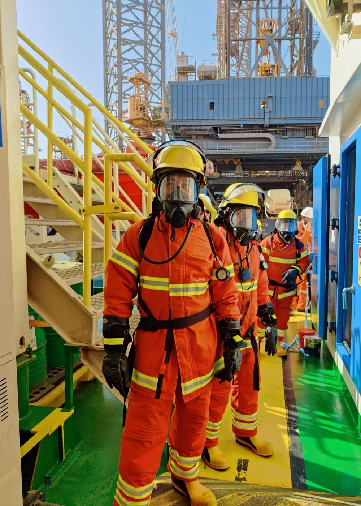

Взривозащитена техника, строг режим на смените и един критерий за приемане, който не подлежи на тълкуване.
Автоцистерните са проверени за херметизация. Оборудването за работа в среда с въглеводороди е взривозащитено.
Почистването се извършва най-малко от трима души, при строг режим на смените и с оборудване, което не може да предизвика искра.

Резервоарът се предава едва след като съдържанието на въглеводороди падне под 300 мг/куб.м., потвърдено с не по-малко от три газови проби. Тогава се изготвя приемо-предавателен протокол.
Разрешения от МОСВ на основание чл. 12, ал. 1 и чл. 37 от ЗОВВВООС за почистване на вместимости за нефтопродукти на територията на цялата страна.
Почистване на вместимости за нефтопродукти на територията на цялата страна.
Дейности с опасни отпадъци — събиране, транспортиране и временно съхраняване.
Обадете се за оглед и оферта. Работим на територията на цялата страна.